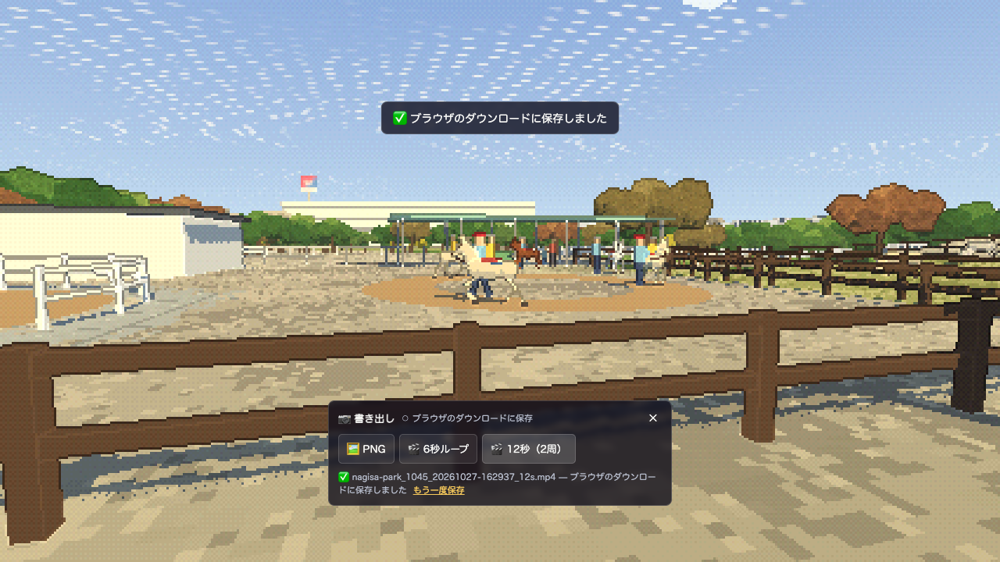

2026-10-27。改修コミット 28a874be91bcc87e8dbf6e9f72626b044f8f4aba の公開後に、GitHub Pagesで実際に取得したページ・モジュール・画像を使って検証しました。ローカルソースやThree.jsへの差し替えは行っていません。
公開版なぎさページ / 詳細設計・検証結果 / 再レビュー時の比較 / Pagesデプロイ成功
| 確認内容 | 結果 |
|---|---|
| 公開ファイル | 表示検証・保存検証で各37件をコミットとSHA-256比較。不一致0件。 |
| 歩行と接地 | 歩行の4,320点で到達限界補正0。支持2,784点・静止28点を実際の走路/地形へレイ判定し一致。 |
| ループ | 0/6/12秒の全体描画とポニー直接更新の両方で一致。影・反射も更新して比較。 |
| 保存 | 実UIでPNG1280×720、6秒・12秒のH.264 MP4をダウンロード。通常状態へ復帰。 |
| 表示・負荷 | 通常視点1,726描画、中央値5.20ms。GLエラー・シェーダーエラー・実行時例外0。夕景PNGはローカル再レビュー時と一致。 |
6秒動画は6.005300秒、12秒動画は12.019733秒。実時間の採取と圧縮により固定60fpsや画素完全一致は保証しません。実ファイルをloop再生して確認できます。

デプロイ / 表示時の配信ファイル照合 / 保存時の配信ファイル照合 / 接地・負荷・継ぎ目 / 実保存 / 動画解析 / プッシュ前56件のテスト
実機スマートフォン/iOS Safari、現地の正確な寸法・個体の再現は未検証です。